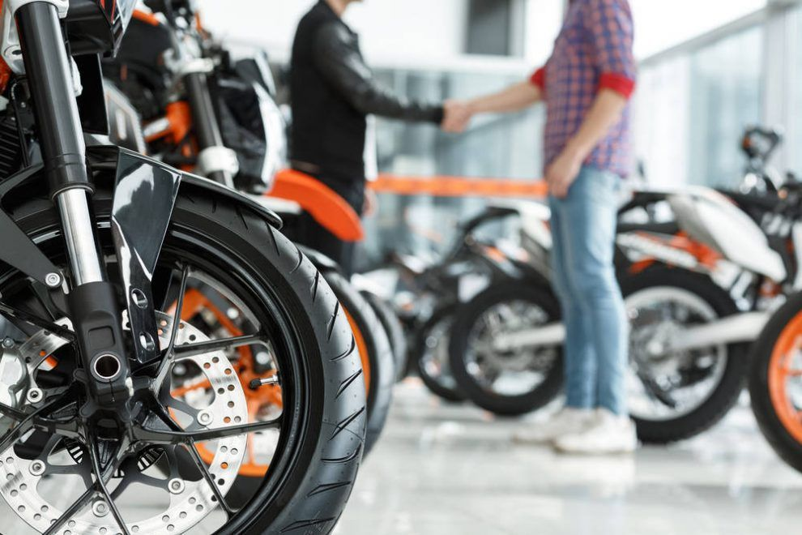

15 CONSEJOS PARA COMPRAR MOTO NUEVA
¿Estás pensando en comprar una moto nueva? ¿Quieres encontrar la moto perfecta para ti, pero no sabes como hacerlo? ¡Estás en el sitio correcto! La decisión de comprar una moto nueva siempre es algo complicado, seguro que te has comido la cabeza alguna la vez y más los días previos a realizar la compra. Comprar una moto nueva nueva suele ser siempre la opción más segura, pues vas a ser tú el que controles desde el principio que la moto ha estado bien cuidada y utilizada, cumpliendo con los periodos de revisión que marca el libro de mantenimiento.

Puede darse el caso de que no puedas optar por una moto nueva a estrenar y tengas que buscar entre motos de segunda mano. Sea como sea, una moto tiene que proporcionarte la seguridad necesaria para que puedas disfrutar de su conducción, de manera cómoda y protegida. Por ello, antes de salir a comprarla, es importante que sepas escoger la moto correcta para ti para que tu primera experiencia en moto sea lo más reconfortante posible. Para ello, en esta guía vamos a explicarte algunos aspectos clave que debes tener en cuenta a la hora comprar una moto nueva.
Consejos para comprar una moto nueva
#1 Investiga y analiza el mercado
Antes de nada, investiga el mercado y los diferentes modelos de moto que existen. Hazte una idea de qué es lo que quieres y quién puede ofrecerte lo que necesitas. En el mercado existen diferentes tipos de motos y marcas que pueden llamar tu atención. Entre los modelos encontrarás las Scooters, motos GT o motos Trail por decir algunos. Si piensas en marcas, seguro que vienen a tu mente las motos Yamaha, Honda o Suzuki entre otras muchas.
Antes de nada, investiga el mercado y los diferentes modelos de moto que existen. Hazte una idea de qué es lo que quieres y quién puede ofrecerte lo que necesitas. En el mercado existen diferentes tipos de motos y marcas que pueden llamar tu atención. Entre los modelos encontrarás las Scooters, motos GT o motos Trail por decir algunos. Si piensas en marcas, seguro que vienen a tu mente las motos Yamaha, Honda o Suzuki entre otras muchas.
#2 Es imprescindible que hagas pie
De entre todas las motos del mercado, es posible que haya una moto que te guste más que otras pero, ante todo, debes buscar tu seguridad y por ello es muy importante que compres una moto en la que hagas pie cómodamente. Así evitarás muchas caídas «tontas» como podría pasarte si te cuesta mantenerte de pie al parar en un semáforo.
Debes saber que hay muchas motos con asiento regulable y otras tantas con la opción de sillín bajo.
#3 Busca una moto con un peso adecuado
En relación con el punto anterior, el peso de la moto es muy importante. Ten en cuenta que a la hora de maniobrar, sobre todo si estás parado, el peso de la moto va a jugar un papel determinante. Si a eso le sumaras no hacer pie correctamente, la situación sería aún más complicada. A la hora de elegir tu moto, procura que tenga un tamaño y un peso que puedas manejar ya sea para maniobrar con ella o, simplemente para ponerla en pie en el caso de una caída.
#4 Comprueba las cilindradas de la moto
Cuanto mayor sea la cilindrada de una moto, mayor será su potencia y, al mismo tiempo, será más cara de mantener. Esto es algo que debes de tener en cuenta, las motos con una cilindrada mayor desgastan más rápidamente los neumáticos, consumen más gasolina, sus consumibles y recambios son más caros, su seguro cuesta más dinero y paga más impuestos. Por lo tanto, es más económico mantener una moto de 300cc que una de 500cc.
Si no dispones de un presupuesto demasiado amplio, pero estás decidido a hacerte con un ciclomotor, te recomendamos que eches un vistazo al mercado de ocasión, ya que es muy probable que encuentres un ciclomotor que te puedas permitir.
#5 Piensa para qué vas a utilizar la moto
Tener en cuenta para qué vas a utilizar la moto será también determinante a la hora de elegir modelo y marca. Así, podrás elegir una moto deportiva o de campo si vas a utilizarla exclusivamente para recorridos fuera de la carretera , o una moto clásica para otro tipos de recorrido. También debes pensar en si vas a llevar pasajeros o no. De ser así, piensa en su comodidad y también en la tuya. Busca una moto cuya la plaza trasera sea amplia, que tenga asas, y que no vaya expuesta al viento.
#6 Encuentra la moto que corresponda con tu carnet
Es importante que compres una moto nueva válida para el tipo de carnet de moto que tengas. También es necesario que conozcas bien la normativa, si tienes una moto de 125cc es imprescindible que la equipes con un sistema de frenos avanzados o ABS. Aunque la opción de equipar tu moto nueva con los ABS sea bastante más cara, está claro que es mucho más segura.
#7 Crea una lista con los modelos que más te gusten
Ahora que estás un poco más enterado y ya sabes lo que buscas, haz una lista con los modelos que más te gustan, crea una columna de pros y otra de contras, analiza sus precios y todos los accesorios o extras que puede incluir en la compra de cada moto o de lo contrario, que es lo que le falta.
Ten cuenta los modelos de ciclomotores de años anteriores, la variación entre las motos de un año y otro son únicamente estéticas.
Si han cambiado la pegatina, los colores y poco más, elegir una motocicleta de la «temporada» anterior te puede suponer un ahorro interesante de dinero ya que en el fondo se tratará de la misma moto con una estética diferente. Si el cambio no es sólo a nivel estético sino que han hecho un cambio más profundo en el modelo, la diferencia de precio entre el modelo anterior y el actual se dispara y con ello el ahorro.
#8 Cuanto dinero quieres gastarte
No puedes seleccionar una moto sin conocer los precios que se manejan. Por eso, es importante que compares y establezcas un presupuesto que estés dispuesto a pagar. Además de la moto, debes tener en cuenta otros gastos imprescindibles al adquirir una nueva moto.
-
Vestuario: está claro que vas a necesitar un casco, unos guantes o incluso unas botas para estrenar con tu moto nueva. Utilizar equipo antiguo solo conseguirá quitarle encanto a tus aventuras y sobretodo proporcionarte menos seguridad.
-
Seguro: el seguro para tu moto es obligatorio, así que vas a tener que reservar parte del presupuesto para ello. Te aconsejamos que te informes antes de adquirir la moto. Siempre puedes utilizar herramientas como Rastreator para comparar diferentes seguros y elegir el que mejor te convenga.
-
Mantenimiento: si quieres mantener tu moto nueva en buenas condiciones y poder disfrutar de ella durante un largo periodo, es indispensable realizar las revisiones establecidas.
#9 Busca la mejor oferta
Tienes casi todas las claves para conseguir la moto que más se adapte a tus necesidades. Ya que conoces los aspectos que debes tener en cuenta, te aconsejamos que no esperes a encontrar los últimos modelos, existen diferentes ofertas de temporadas anteriores que siguen siendo una maravilla.
Aceptar la primera o la segunda oferta te deja expuesto ante el comercial y no podrás seguir “peleando” el precio.
Ten en cuenta que esto es un proceso de negociación, lo mejor es siempre ir tranquilo y con las cosas muy claras.
#10 Cuando no baje más el precio, negocia con los extras
Cuando el precio no dé más de sí, pasa a negociar los extras de la motocicleta como el seguro, gasolina gratis, financiación sin intereses… o algún equipamiento, candado, casco… y no olvides los plazos de entrega. A lo mejor, optar por el precio más económico significa esperar un mes más a tener tu moto respecto a otro modelo más caro, simplemente porque no disponen de unidades en el concesionario elegido.
#11 El presupuesto debe estar bien cumplimentado
Un presupuesto es la manifestación por escrito de la voluntad del vendedor de comprometerse con el comprador en un momento dado. De este modo, el consumidor puede solicitar varios presupuestos a distintos concesionarios, compararlos, y reflexionar tranquilamente en su casa sobre cada oferta. Para evitar problemas en caso de incumplimiento, el presupuesto tiene que estar bien cumplimentado con los siguientes datos:
- Membrete del vendedor con su logotipo, razón social, dirección completa, teléfono y fax de contacto.
- El lugar y la fecha en la que se emite el presupuesto.
- Descripción completa del vehículo sobre el que se emite: marca, modelo, cilindrada, caballos, color, extras uno a uno.
- Descripción del precio completo “llave en mano”, impuestos, gestoría y tasas incluidas.
- Fecha en la que vence ese compromiso. Exígele al concesionario al menos un mes.
#12 Fíjate en los kilómetros recorridos
Si te decidieras por comprar una moto de segunda mano, asegúrate de que ha recorrido los kilómetros que te han dicho inicialmente. Algo que te puede ayudar a averiguar los kilómetros que tiene la moto son los discos de freno: un escalón importante en el borde de los discos indica muchos kilómetros. Los discos nuevos no tienen escalón y éste lo forman las pastillas al rozar con el disco en las frenadas.
#13 Comprueba la VTV
En las motos de segunda mano es recomendable comprobar la fecha de la última revisión y la última VTV para confirmar que todo está en regla. Además, si a la moto se le ha hecho su mantenimiento en un taller oficial, puedes pedir al vendedor el historial de la moto. Si además de realizar esta investigación, llevas la moto a un taller donde te aseguren una revisión profesional antes de firmar el contrato, estarás asegurándote de que realizas una buena compra.
Conclusión: Elige la compañera de rutas más adecuada
Cuando buscas tu primera moto soñando que te acompañe en tus rutas moteras por España o con la que recorrerás Europa, debes tener en cuenta una serie de recomendaciones que te ayudarán a dar con la mejor moto para ti. Al decidirte por un modelo determinado, prioriza tu comodidad y tu seguridad antes que la estética de la moto. Montar en tu primera moto debe ser una experiencia inolvidable que quieras revivir una y otra vez.